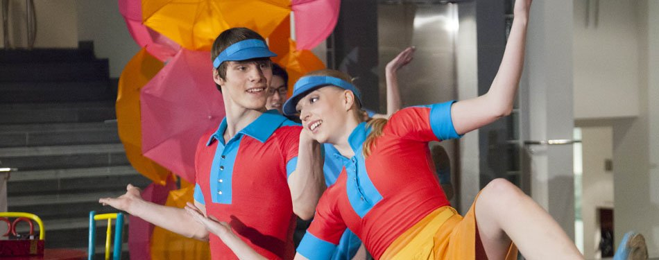

Kansallisooppera järjestää usein ohjelmaa lapsille ja ohjelmaa, jossa lapset pääsevät näyttämään osaamisensa. blaablaa
Avoimien ovien päivät
Kansallisooppera järjestää avoimien ovien päiviä, jolloin pääset näkemään ja kokeilemaan monenlaista aktiviteettia. Esittelemme esimerkiksi orkesterin käyttämiä soittimia ja opetamme baletin alkeita. Lapset voivat myös osallistua taidetuokioon ja musiikkityöpajaan.
Esityksiä
Muumipeikko ja pyrstötähti
Muumilaaksossa kaikki ei ole kohdallaan, ja Muumipeikko ystävineen päättää selvittää, mikä on vialla. Jännittävällä matkalla Muumipeikko tapaa uusia tuttavuuksia ja saa tähtitornissa kuulla Muumilaaksoa uhkaavasta pyrstötähdestä. Kuinka Muumilaakson käy?
Muumipeikon ja pyrstötähden tarina on yksi Tove Janssonin varhaisimmista muumitarinoista. Anandah Konosen koreografia tuo jännittävän ja tutun tarinan baletin maailmaan. Muumipeikko ystävineen tavataan baletissa tuttuina hahmoina, ja vaikkei Muumipeikon keho taivukaan balettiin, nähdään myös hänen tanssahtelevan. Klassista balettia esityksessä nähdään mm. monien matkalla vastaantulevien hahmojen tanssimana!

Suositun sopparavintolan siivooja Sofia unelmoi tarjoilijan paikasta. Kun ravintolapäällikkö ja tarjoilija lähtevät noutamaan päivän tuoreita raaka-aineita, Sofialle koettaa tilaisuus kokeilla siipiään haaveittensa ammatissa. Kaikki ei kuitenkaan mene aivan suunnitelmien mukaisesti, ja pian on valmiina sellainen soppa, että sen selvittämiseksi tarvitaan koko porukan yhteistyötaitoja. Miten Sofian käy? Vastauksen kertoo Sara Saviolan riemukas nykytanssiteos 6-9-vuotiaille.